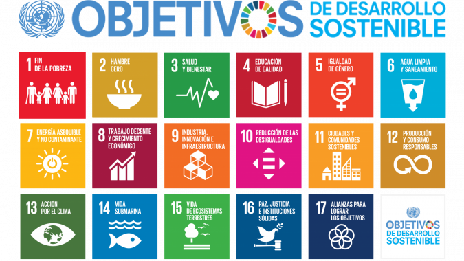

5. Sostenibilidad
Para tratar de aplicar criterios de sostenibilidad en el uso de las TIC, nos basaremos en los Objetivos de Desarrollo Sostenible elaborados por las Naciones Unidas en 2015.

El uso sostenible de las TIC tiene tres dimensiones:
- Social: condiciones laborales en la fábricas de dispositivos, extracción de materias primas, tratamiento de residuos electrónicos, etc.
- Económica: consumo, vida útil de los dispositivos, reutilización, economía circular…
- Medioambiental: técnicas de producción y contaminación asociada, explotación de materias primas, consumo energético, reciclaje…
En esta guía proporcionaremos algunas recomendaciones que influyen en las tres dimensiones anteriores. Su aplicación depende de cada uno/a de nosotros/as como individuos responsables y de toda la comunidad educativa del IES Celia Viñas como colectividad.
5.1. Publicaciones en la red
Aunque parezca mentira, cada vez que accedemos a internet estamos consumiendo recursos: electricidad, ancho de banda (que se traduce en la necesidad de nuevas redes de comunicaciones), tiempo de cómputo en los centros de proceso de datos y en todos los dispositivos involucrados… Los centros de proceso de datos que constituyen el andamiaje de internet son unos gigantescos sumideros energéticos.
Por ello, proponemos las siguientes acciones:
- Accede a internet solo cuando sea necesario.
- Publica solo el contenido imprescindible. Esto es aplicable a blogs, foros, redes sociales o cualquier otro tablón digital.
- No satures las redes sociales con contenidos innecesarios.
- No compartas contenido cuya fuente desconoces. Un sorprendentemente alto porcentaje de los contenidos de tipo viral son falsos.
- No contribuyas a la desinformación. Antes de propagar una noticia, por muy interesante que parezca, contrástala.
- Minimiza el número de mensajes que envías. Centraliza tus comunicaciones en unos pocos mensajes.
- Los mensajes de texto consumen mucho menos recursos que los de audio, y estos mucho menos que los de vídeo. Actúa en consecuecia.
- ¿Realmente necesitas ver vídeo en calidad 4K en la pantalla de 6 pulgadas del teléfono móvil? Racionaliza el consumo de datos.
5.2. Renovación de dispositivos
Seguro que has oído hablar de la obsolescencia programada. La industria electrónica, en su búsqueda de beneficio económico, intenta acelerar el proceso de renovación de nuestra equipación tecnológica. ¿Es esto inevitable?
Te proponemos algunas medidas para paliar esta situación:
- Antes de comprar un dispositivo nuevo, asegúrate de que realmente lo necesitas. Cambiar tu disco duro antiguo por uno de estado sólido puede estirar la vida útil de tu viejo ordenador varios años más. Eliminar de tu teléfono móvil las aplicaciones que no usas o restablecer su configuración de fábrica puede hacerlo funcionar razonablemente durante más tiempo.
- Adquiere productos de empresas que cumplan con prácticas laborales legales y respeten los criterios de sostenibilidad en su cadena de producción. Puedes conocer estas prácticas a través de organizaciones como Greenpeace o Electronics Watch.
- Compra productos que puedan ser desmontados, reparados y actualizados.
- Prolonga la vida de las baterías siguiendo los consejos del fabricante.
- Siempre que sea posible, dona tus dispositivos antiguos a personas o instituciones que puedan aprovecharlos.
- En última instancia, lleva tus dispositivos obsoletos a un punto limpio donde sus componentes puedan reciclarse. Jamás tires un dispositivo electrónico a la basura convencional.
5.3. Consumo energético
Los centros de proceso de datos consumen mucha energía, la mayoría procedente de combustiles fósiles. En contra de lo que pueda parecer, nosotros, con nuestros múltiples terminales conectados a la red, podemos contribuir a aumentar o disminuir ese consumo energético.
- Contrata tu conexión a internet con aquellas compañías que sean menos contaminantes. Unos minutos de búsqueda por la red te darán mucha información al respecto.
- Contrata una tarifa razonable. ¿Seguro que necesitas 600 Megabits por segundo en tu casa?
- Descarga los documentos que utilices de forma más habitual para trabajar con ellos offline.
- Las videollamadas también contaminan. Utilízalas solo cuando no haya otra opción. Recuerda que el vídeo consume más recursos que el audio, el audio más que las imágenes y las imágenes más que el texto.
- Adquiere dispositivos electrónicos de bajo consumo.
- Apaga los dispositivos electrónicos cuando no los estés usando. Una bombilla de un proyector que se queda encendido toda la tarde, por ejemplo, consume una barbaridad.
- No cargues las baterías de tus dispositivos durante más tiempo del necesario: disminuye la vida útil de la batería y malgasta electricidad.
- Utiliza eficientemente la batería de tu ordenador o tu smartphone: cierra las aplicaciones que no uses, baja el brillo de la pantalla, mantén el sistema actualizado y no instales más software o más hardware del que realmente necesitas.
- Conviértete en un ejemplo a seguir en el uso sostenible de las TIC en tu entorno familiar y laboral.